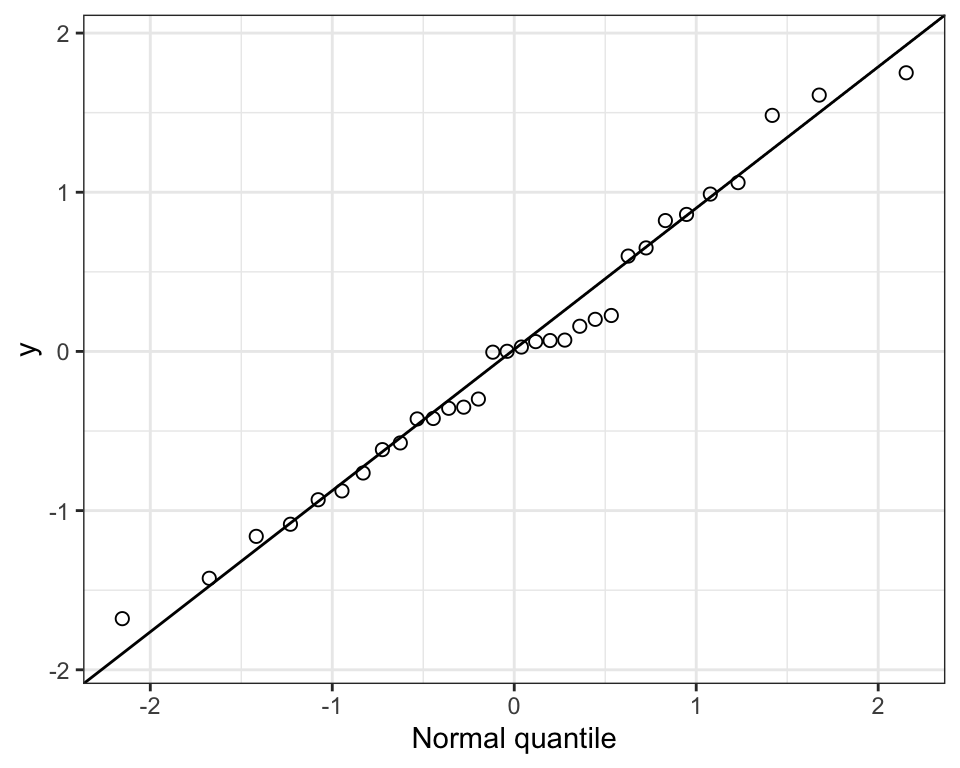
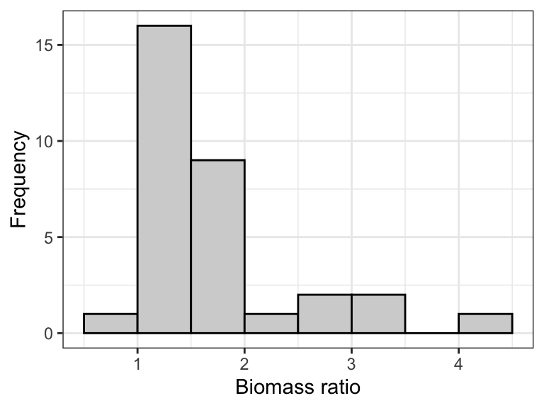
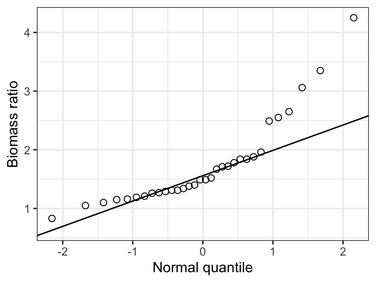
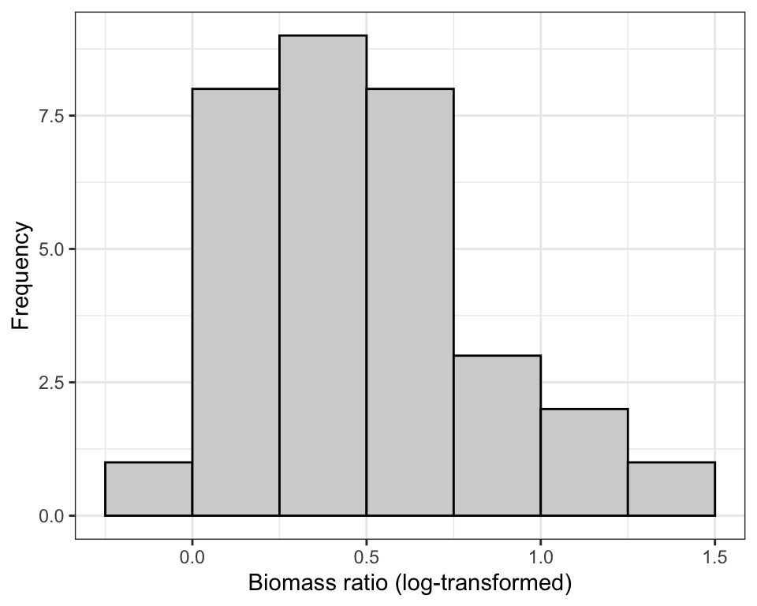
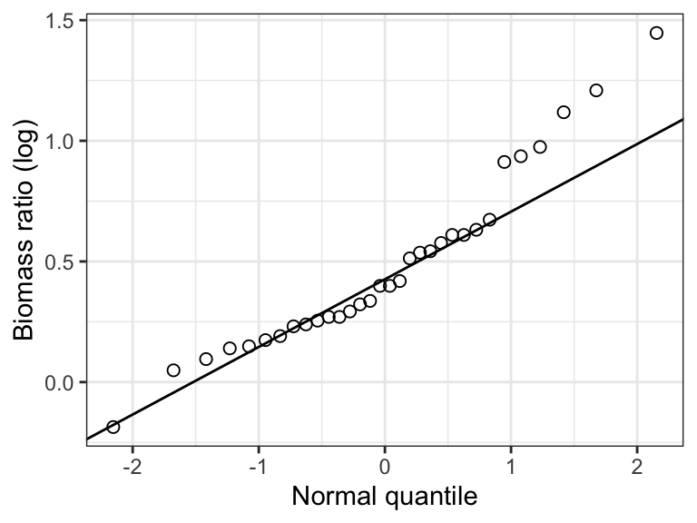
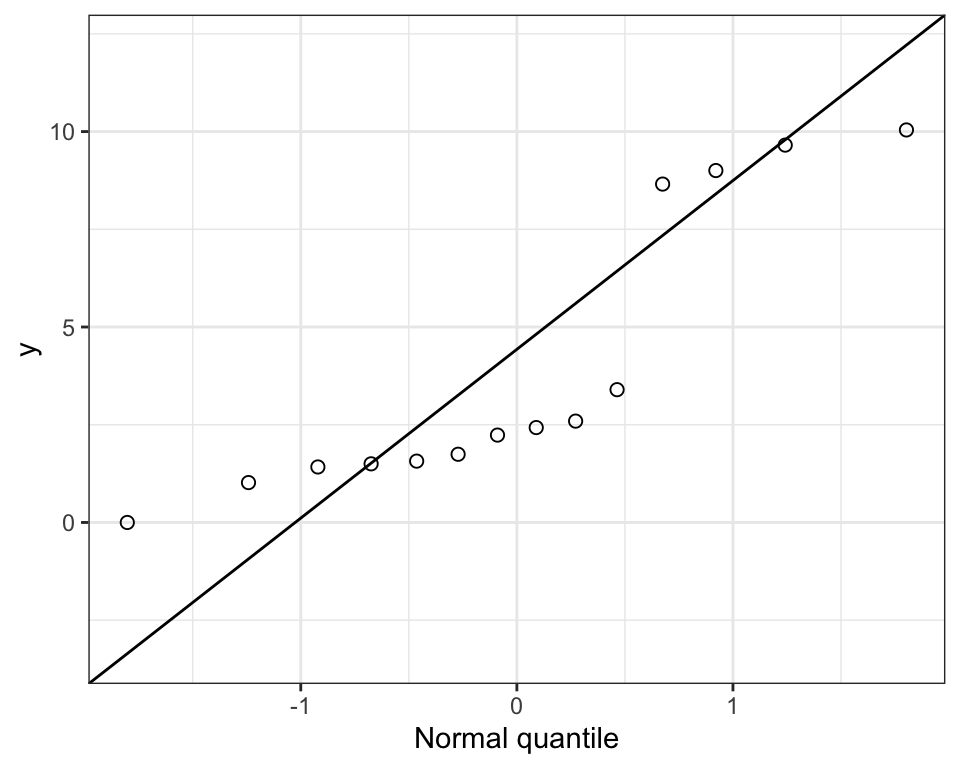
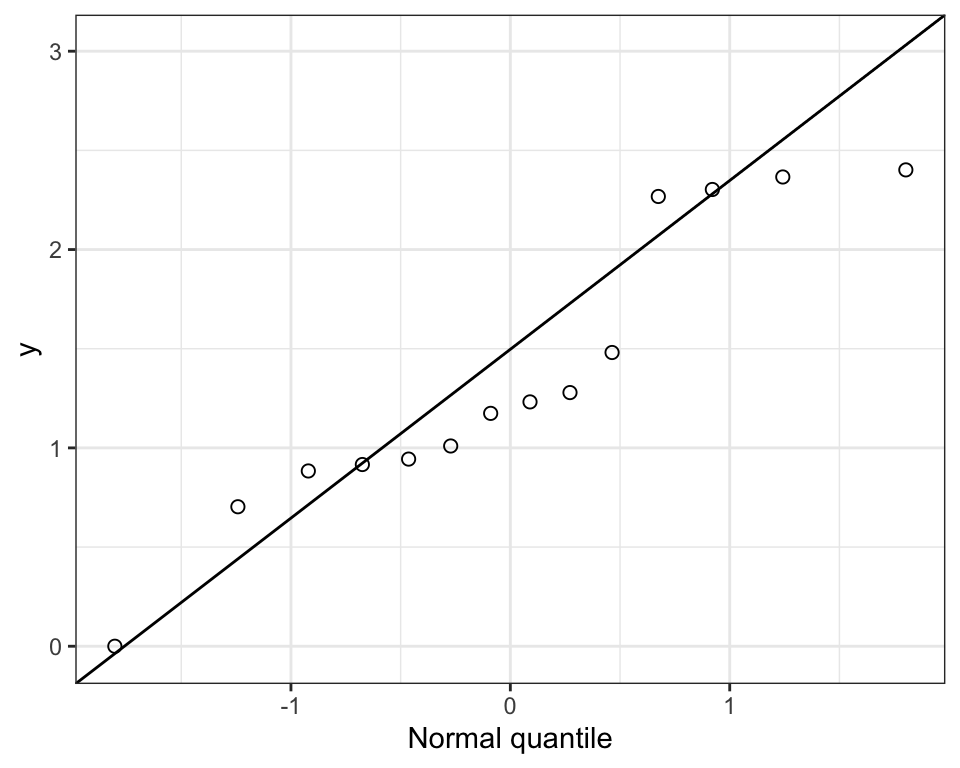
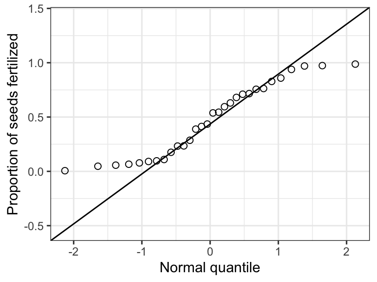
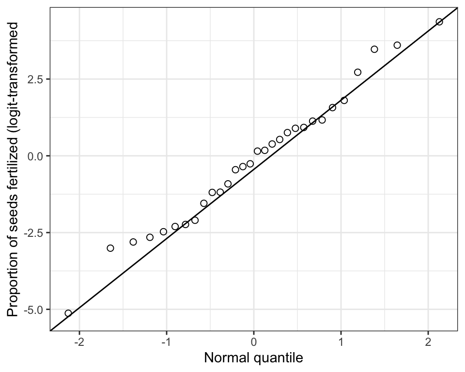

library(dplyr)
library(ggplot2)
library(readr)
library(broom)
library(biol202)14 Checking assumptions and data transformations
Tutorial learning objectives
- Learn how to check the normality assumption
- Normal quantile plots
- Shapiro-Wilk test for normality
- Learn how to check the equal variance assumption
- Levene’s Test
- Learn how to transform the response variable to help meet assumptions
- log-transform
- Dealing with zeroes
- log bases
- back-transforming log data
- logit transform
- back-transforming logit data
- when to back-transform?
Most statistical tests, such as the \(\chi\)2 goodness of fit test, the \(\chi\)2 contingency test, t-test, ANOVA, Pearson correlation, and least-squares regression, have assumptions that must be met. For example, the one-sample t-test requires that the variable is normally distributed in the population, and least-squares regression requires that the residuals from the regression be normally distributed. In this tutorial we’ll learn ways to check the assumption that the variable is normally distributed in the population.
We’ll also learn how transforming a variable can sometimes help satisfy assumptions, in which case the analysis is conducted on the transformed variable.
14.1 Load packages and import data
Load the usual packages, and broom, which has been used in some tutorials:
And we need these two packages also: car, boot. Install these if you don’t have them (as per instructions in a previous tutorial), then load them:
library(car)
library(boot)The marine dataset is discussed in example 13.1 in the text book. The flowers dataset is described below. The students dataset includes data about BIOL202 students from a few years ago.
Load all three:
data(marine)
data(flowers)
data(students)Explore the marine and flowers datasets:
marine %>%
glimpse()
#> Rows: 32
#> Columns: 1
#> $ biomass_ratio <dbl> 1.34, 1.96, 2.49, 1.27, 1.19, 1.15, 1.29, 1.05, 1.10, 1.…flowers %>%
glimpse()
#> Rows: 30
#> Columns: 1
#> $ prop_fertile <dbl> 0.065712610, 0.987433542, 0.388792570, 0.680489246, 0.077…14.2 Checking the normality assumption
Statistical tests such as the one-sample t test assume that the response variable of interest is normally distributed in the population.
Many biological variables are known to be normally distributed in the population, but for some variables we can’t be sure. Given a proper random sample from the population, of sufficient sample size, we can assume that the frequency distribution of our sample data will, to reasonable degree, reflect the frequency distribution of the variable in the population.
Importantly, tests such as the one-sample t test are somewhat robust to minor violations of this assumption. Nevertheless, it is best practice to be transparent in testing the assumption, i.e. showing how it was tested and exactly what was found.
14.2.1 Normal quantile plots
The most straightforward way to check the normality assumption is to visualize the data using a normal quantile plot.
The ggplot2 package has plotting functions for this, called stat_qq and stat_qq_line:
?stat_qq
?stat_qq_lineFor details about what Normal Quantile Plots are, and how they’re constructed, consult this informative link.
Note
If the frequency distribution were normally distributed, points would fall close to the straight line in the normal quantile plot.
Check out this example showing simulated data drawn from a normal distribution:

Now we’ll use the marine dataset and its variable called biomass_ratio to illustrate.
We’ll first construct a histogram as you’ve learned previously, just to see how the shape of the frequency distribution relates to the pattern seen in the normal quantile plot.
marine %>%
ggplot(aes(x = biomass_ratio)) +
geom_histogram(binwidth = 0.5, colour = "black", fill = "lightgrey",
boundary = 0, closed = "left") +
xlab("Biomass ratio") +
ylab("Frequency") +
theme_bw()
Notice that the distribution is quite right-skewed (or “postively skewed”).
Now the quantile plot:
marine %>%
ggplot(aes(sample = biomass_ratio)) +
stat_qq(shape = 1, size = 2) +
stat_qq_line() +
ylab("Biomass ratio") +
xlab("Normal quantile") +
theme_bw()
Notice that in the “aes” argument we use “sample = biomass_ratio”. This is new, and is only required for the normal quantile plot, specifically the subsequent stat_qq and stat_qq_line functions.
Notice that normal quantile plot shows points deviating substantially from the straight line in the top-right part of the plot, and this corresponds to the right-skew in the histogram.
Clearly, the frequency distribution of the biomass_ratio variable does not conform to a normal distribution.
Here’s an example statement one could make when checking this assumption:
The assumption of normality was checked visually using a normal quantile plot, which showed that the data were clearly not normally distributed.
Note
Important: Egregious deviations from the normality assumption will be clearly evident in normal quantile plots (as in the example above). If it is difficult to tell whether the data are normally distributed, then they probably are OK (at least sufficiently with respect to the assumption).
14.2.2 Shapiro-Wilk test for normality
Although graphical assessments are usually sufficient for checking the normality assumption, one can conduct a formal statistical test of the null hypothesis that the data are sampled from a population having a normal distribution. The test is called the Shapiro-Wilk test.
The Shapiro-Wilk test is a type of goodness-of-fit test.
Note
Sometimes the Shapiro-Wilk test is applied in a hypothesis testing framework, but when it is applied as part of checking assumptions for another statistical test (like we’re doing here), one does not need to present it in a hypothesis test framework. However, the implied null hypothesis is that “The data are sampled from a population having a normal distribution”, and one does interpret the resulting P-value in the same way as usual, i.e. in relation to an \(\alpha\) level (see below).
We’ll make use of the shapiro.test function from base R stats package:
shapiro.testLet’s use this on the biomass_ratio variable in the “marine” dataset. We’ll assign the output to an object called “shapiro.result”, then we’ll have a look at the results.
Note
The output from the shapiro.test function is not “tidy”, so we will use the tidy function from the broom package to make it tidy.
Here we go: we provide the function with the tibble name (“marine”) and the variable of interest after a “$”:
shapiro.result <- shapiro.test(marine$biomass_ratio)Now tidy the output:
shapiro.result.tidy <- tidy(shapiro.result)Now look at the results:
shapiro.result.tidy
#> # A tibble: 1 × 3
#> statistic p.value method
#> <dbl> <dbl> <chr>
#> 1 0.818 0.0000885 Shapiro-Wilk normality testThe tidy object includes:
- The value of the test statistic for the Shapriro-Wilk test (although it is not shown, this test statistic is indicated with a “W”)
- The P-value associated with the test (“p.value”)
- The name of the test used (“method”)
Given that the P-value is less than a conventional \(\alpha\) level of 0.05, the test is telling us that the data do not conform to a normal distribution. Of course we already knew that from our visual assessments!
Here’s an example statement:
The assumption of normality was checked visually using a normal quantile plot, and a Shapiro-Wilk test, which revealed evidence of non-normality (Shapiro-Wilk test, W = 0.82, P-value < 0.001).
Note
Important: Visual assessments of normality are preferred, because the outcome of the Shapiro-Wilk test is sensitive to sample size: a small sample size will often yield a false negative, whereas very large sample sizes could yield false positives more than it should.
14.3 Checking the equal-variance assumption
Some statistical tests, such as the 2-sample t-test and ANOVA, assume that the variance (\(\sigma\)) of the numeric response variable is the same among the populations being compared.
For this we use the Levene’s test, which we implement using the leveneTest function from the car package:
?leveneTestLike the Shapiro-Wilk test, the Levene’s test can be applied in a hypothesis testing framework, but when it is used to evaluate the equal-variance assumption, it need not be.
Nevertheless, the implied null hypothesis is that the variance of the numeric response variable is the same among the populations being compared. So in the case where a numeric variable is being compared among two groups, then the implied null hypothesis is that (\(\sigma\)(1) = \(\sigma\)(2). The usual \(\alpha\) level of 0.05 can be used.
We’ll use the “students” dataset, and check whether height_cm exhibits equal variance among students with different dominant eyes (left or right).
Let’s look at the code, and explain after:
height.vartest <- leveneTest(height_cm ~ dominant_eye, data = students)
Note
If you get a warning about a variable being “coerced to factor”, that’s OK! It is simply telling you that it took the categorical variable and treated it as a ‘factor’ variable.
In the code chunk above we:
- assign the results to a new object called “height.vartest”
- use the
leveneTestfunction, in which the arguments are:- the numeric response variable (“height_cm”)
- then the “~” symbol
- then the categorical variable “dominant_eye”
- then the “data = students” specifies the data object name
Note
TIP: The argument to the leveneTest function that is in the form \(Y\) ~ \(X\) is one we’ll use several times.
Let’s look at the results:
height.vartest
#> Levene's Test for Homogeneity of Variance (center = median)
#> Df F value Pr(>F)
#> group 1 0.907 0.3424
#> 152The results include:
- the degrees of freedom for the test
- the value of the test statistic “F”
- the P-value associated with the test statistic
For the student height example, the P-value is greater than the standard \(\alpha\) of 0.05, so there’s no evidence against the assumption of equal variance.
A reasonable statement would be:
“A Levene’s test showed no evidence against the assumption of equal variance (F = 0.91; P-value = 0.342).”
Note
TIP: As part of your main statistical test, such as a two-sample t-test or an ANOVA, you would typically provide a graph such as a stripchart or violin plot to visualize how the numeric response variable varies among the groups of the categorical explanatory variable. Such plots may often reveal that the spread of values of the response variable varies considerably among the groups, underscoring the need to check the equal variance assumption.
14.4 Data transformations
Here we learn how to transform numeric variables using two common methods:
- log-transform
- logit-transform
There are many other types of transformations that can be performed, some of which are described in Chapter 13 of the course text book.
Note
Contrary to what is suggested in the text, it is better to use the “logit” transformation rather than the “arcsin square-root” transformation for proportion or percentage data, as described in this article by Warton and Hui (2011).
14.4.1 Log-transform
When one observes a right-skewed frequency distribution, as seen here in the marine biomass ratio data, a log-transformation often helps.
marine %>%
ggplot(aes(x = biomass_ratio)) +
geom_histogram(binwidth = 0.5, colour = "black", fill = "lightgrey",
boundary = 0, closed = "left") +
xlab("Biomass ratio") +
ylab("Frequency") +
theme_bw()
To log-transform the data, simply create a new variable in the dataset using the mutate function (from the dplyr package) that we’ve seen before. Here we’ll call our new variable logbiomass, and use the log function to take the natural log of the “biomass_ratio” variable.
We’ll assign the output to the same, original “tibble” called “marine”:
marine <- marine %>%
mutate(logbiomass = log(biomass_ratio))Alternatively, you could use this (less tidy) code to get the same result:
marine$logbiomass <- log(marine$biomass_ratio)
Note
If your variable includes zeros, then you’ll need to take extra steps, as described in the next section.
Let’s look at the tibble now:
marine
#> # A tibble: 32 × 2
#> biomass_ratio logbiomass
#> <dbl> <dbl>
#> 1 1.34 0.293
#> 2 1.96 0.673
#> 3 2.49 0.912
#> 4 1.27 0.239
#> 5 1.19 0.174
#> 6 1.15 0.140
#> 7 1.29 0.255
#> 8 1.05 0.0488
#> 9 1.1 0.0953
#> 10 1.21 0.191
#> # ℹ 22 more rowsNow let’s look at the histogram of the log-transformed data:
marine %>%
ggplot(aes(x = logbiomass)) +
geom_histogram(binwidth = 0.25, colour = "black", fill = "lightgrey",
boundary = -0.25) +
xlab("Biomass ratio (log-transformed)") +
ylab("Frequency") +
theme_bw()
Now the quantile plot:
marine %>%
ggplot(aes(sample = logbiomass)) +
stat_qq(shape = 1, size = 2) +
stat_qq_line() +
ylab("Biomass ratio (log)") +
xlab("Normal quantile") +
theme_bw()
The log-transform definitely helped, but the distribution still looks a bit wonky: several of the points are quite far from the line.
Just to be sure, let’s conduct a Shapiro-Wilk test, using an \(\alpha\) level of 0.05, and remembering to tidy the output:
shapiro.log.result <- shapiro.test(marine$logbiomass)
shapiro.log.result.tidy <- tidy(shapiro.log.result)
shapiro.log.result.tidy
#> # A tibble: 1 × 3
#> statistic p.value method
#> <dbl> <dbl> <chr>
#> 1 0.938 0.0655 Shapiro-Wilk normality testThe P-value is greater than 0.05, so we’d conclude that there’s no evidence against the assumption that these data come from a normal distribution.
For this example a reasonable statement would be:
Based on the normal quantile plot (Fig. 18.9), and a Shapiro-Wilk test, we found no evidence against the normality assumption (Shapiro-Wilk test, W = 0.94, P-value = 0.066).
You could now proceed with the statistical test (e.g. one-sample t-test) using the transformed variable.
14.4.2 Dealing with zeroes
If you try to log-transform a value of zero, R will return a -Inf value.
In this case, you’ll need to add a constant (value) to each observation, and convention is to simply add 1 to each value prior to log-transforming.
In fact, you can add any constant that makes the data conform best to the assumptions once log-transformed. The key is that you must add the same constant to every value in the variable.
You then conduct the analyses using these newly transformed data (which had 1 added prior to log-transform), remembering that after back-transformation (see below), you need to subtract 1 to get back to the original scale.
Example code showing how to check for zeroes
We’ll create a dataset to work with called “apples”.
Don’t worry about learning this code…
set.seed(345)
apples <- as_tibble(data.frame(biomass = rlnorm(n = 14, meanlog = 1, sdlog = 0.7)))
apples$biomass[4] <- 0Here’s the resulting dataset, which includes a variable “biomass” that would benefit from log-transform:
apples
#> # A tibble: 14 × 1
#> biomass
#> <dbl>
#> 1 1.57
#> 2 2.24
#> 3 2.43
#> 4 0
#> 5 2.59
#> 6 1.74
#> 7 1.42
#> 8 9.00
#> 9 8.66
#> 10 9.65
#> 11 10.0
#> 12 1.02
#> 13 1.50
#> 14 3.40Here’s a quantile plot of the biomass variable:

Let’s first see what happens when we try to log-transform the “biomass” variable:
log(apples$biomass)
#> [1] 0.45056428 0.80433995 0.88697947 -Inf 0.95272789 0.55653572
#> [7] 0.35059322 2.19753971 2.15833805 2.26733776 2.30674058 0.02011719
#> [13] 0.40525957 1.22291473Notice we get a “-Inf” value.
The following code tallies the number of observations in the “biomass” variable that equal zero.
If this sum is greater than zero, then you’ll need to add a constant to all observations when transforming.
sum(apples$biomass == 0)
#> [1] 1So we have one value that equals zero.
So let’s add a 1 to each observation during the process of log-transforming:
apples <- apples %>%
mutate(logbiomass_plus1 = log(biomass + 1))Notice that we name the new variable “logbiomass_plus1” in a way that indicates we’ve added 1 prior to log-transforming, and that in the log calculation we’ve used “biomass + 1”.
Let’s see the result:
apples
#> # A tibble: 14 × 2
#> biomass logbiomass_plus1
#> <dbl> <dbl>
#> 1 1.57 0.944
#> 2 2.24 1.17
#> 3 2.43 1.23
#> 4 0 0
#> 5 2.59 1.28
#> 6 1.74 1.01
#> 7 1.42 0.884
#> 8 9.00 2.30
#> 9 8.66 2.27
#> 10 9.65 2.37
#> 11 10.0 2.40
#> 12 1.02 0.703
#> 13 1.50 0.916
#> 14 3.40 1.48Notice that we still have a zero in the newly created variable, AFTER having transformed, because for that value we calculated the log of “1” (which equals zero). That’s OK!

That’s a bit better. We would now use this new variable in our analyses (assuming it meets the normality assumption).
14.4.3 Log bases
The log function calculates the natural logarithm (base e), but related functions permit any base:
?logFor instance, log10 uses log base 10:
marine <- marine %>%
mutate(log10biomass = log10(biomass_ratio))
marine
#> # A tibble: 32 × 3
#> biomass_ratio logbiomass log10biomass
#> <dbl> <dbl> <dbl>
#> 1 1.34 0.293 0.127
#> 2 1.96 0.673 0.292
#> 3 2.49 0.912 0.396
#> 4 1.27 0.239 0.104
#> 5 1.19 0.174 0.0755
#> 6 1.15 0.140 0.0607
#> 7 1.29 0.255 0.111
#> 8 1.05 0.0488 0.0212
#> 9 1.1 0.0953 0.0414
#> 10 1.21 0.191 0.0828
#> # ℹ 22 more rowsOr the alternative code:
marine$log10biomass <- log10(marine$biomass_ratio)14.4.4 Back-transforming log data
In order to back-transform data that were transformed using the natural logarithm (log), you make use of the exp function:
?expLet’s try it, creating a new variable in the “marine” dataset so we can compare to the original “biomass_ratio” variable:
First, back-transform the data and store the results in a new variable within the data frame:
marine <- marine %>%
mutate(back_biomass = exp(logbiomass))Now have a look at the first few lines of the tibble (selecting the original “biomass_ratio” and new “back_biomass” variables) to see if the data values are identical, as they should be:
marine %>%
select(biomass_ratio, back_biomass)
#> # A tibble: 32 × 2
#> biomass_ratio back_biomass
#> <dbl> <dbl>
#> 1 1.34 1.34
#> 2 1.96 1.96
#> 3 2.49 2.49
#> 4 1.27 1.27
#> 5 1.19 1.19
#> 6 1.15 1.15
#> 7 1.29 1.29
#> 8 1.05 1.05
#> 9 1.1 1.1
#> 10 1.21 1.21
#> # ℹ 22 more rowsYup, it worked!
If you had added a 1 to your variable prior to log-transforming, then the code would be:
marine <- marine %>%
mutate(back_biomass = exp(logbiomass) - 1)Notice the minus 1 comes after the exp function is executed.
If you had used the log base 10 transformation, then the code to back-transform is as follows:
10^(marine$log10biomass)
#> [1] 1.34 1.96 2.49 1.27 1.19 1.15 1.29 1.05 1.10 1.21 1.31 1.26 1.38 1.49 1.84
#> [16] 1.84 3.06 2.65 4.25 3.35 2.55 1.72 1.52 1.49 1.67 1.78 1.71 1.88 0.83 1.16
#> [31] 1.31 1.40The ^ symbol stands for “exponent”. So here we’re calculating 10 to the exponent x, where x is each value in the dataset.
14.4.5 Logit transform
Variables whose data represent proportions or percentages are, by definition, not drawn from a normal distribution: they are bound by 0 and 1 (or 0 and 100%). They should therefore be logit-transformed.
The boot package includes both the logit function and the inv.logit function, the latter for back-transforming.
However, the logit function that is in the car package is better, because it accommodates the possibility that your dataset includes a zero and / or a one (equivalently, a zero or 100 percent), and has a mechanism to deal with this properly.
The logit function in the boot package does not deal with this possibility for you.
However, the car package does not have a function that will back-transform logit-transformed data.
This is why we’ll use the logit function from the car package, and the inv.logit function from the boot package!
Let’s see how it works with the flowers dataset, which includes a variable prop_fertile that describes the proportion of seeds produced by individual plants that were fertilized.
Let’s visualize the data with a normal quantile plot:
flowers %>%
ggplot(aes(sample = prop_fertile)) +
stat_qq(shape = 1, size = 2) +
stat_qq_line() +
ylab("Proportion of seeds fertilized") +
xlab("Normal quantile") +
theme_bw()
Clearly not normal!
Now let’s logit-transform the data.
To ensure that we’re using the correct logit function, i.e. the one from the car package and NOT from the boot package, we can use the :: syntax, with the package name preceding the double-colons, which tells R the correct package to use.
flowers <- flowers %>%
mutate(logitfertile = car::logit(prop_fertile))Or the alternative code:
flowers$logitfertile <- car::logit(flowers$prop_fertile)Now let’s visualize the transformed data:
flowers %>%
ggplot(aes(sample = logitfertile)) +
stat_qq(shape = 1, size = 2) +
stat_qq_line() +
ylab("Proportion of seeds fertilized (logit-transformed") +
xlab("Normal quantile") +
theme_bw()
That’s much better!
Next we learn how to back-transform logit data.
14.4.6 Back-transforming logit data
We’ll use the inv.logit function from the boot package:
?boot::inv.logitFirst do the back-transform:
flowers <- flowers %>%
mutate(flower_backtransformed = boot::inv.logit(logitfertile))Or alternative code:
flowers$flower_backtransformed <- boot::inv.logit(flowers$logitfertile)Let’s have a look at the original “prop_fertile” variable and the “flower_backtransformed” variable to check that they’re identical:
flowers %>%
select(prop_fertile, flower_backtransformed)
#> # A tibble: 30 × 2
#> prop_fertile flower_backtransformed
#> <dbl> <dbl>
#> 1 0.0657 0.0657
#> 2 0.987 0.987
#> 3 0.389 0.389
#> 4 0.680 0.680
#> 5 0.0778 0.0778
#> 6 0.973 0.973
#> 7 0.175 0.175
#> 8 0.109 0.109
#> 9 0.716 0.716
#> 10 0.0471 0.0471
#> # ℹ 20 more rowsYup, it worked!
14.4.7 When to back-transform?
You should back-transform your data when it makes sense to communicate findings on the original measurement scale.
The most common example is reporting confidence intervals for a mean or difference in means.
For example, imagine you had calculated a confidence interval for the log-transformed marine biomass ratio data, and your limits were as follows:
0.347 < \(ln(\mu)\) < 0.611
These are the log-transformed limits! So we need to back-transform them to get them in the original scale:
lower.limit <- exp(0.347)
upper.limit <- exp(0.611)So now the back-transformed interval is:
1.415 < \(\mu\) < 1.842
Voila!